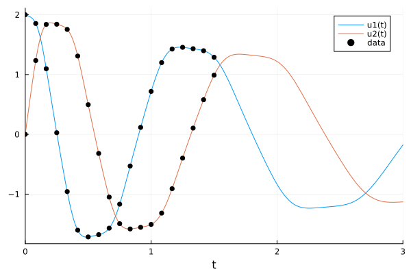
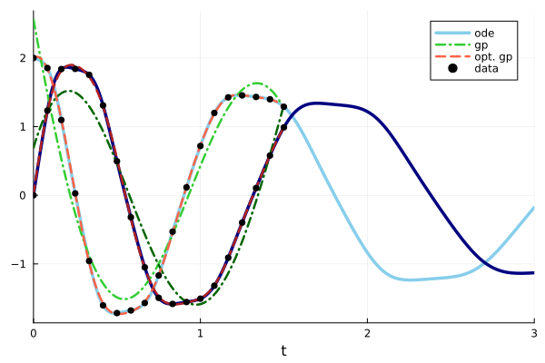
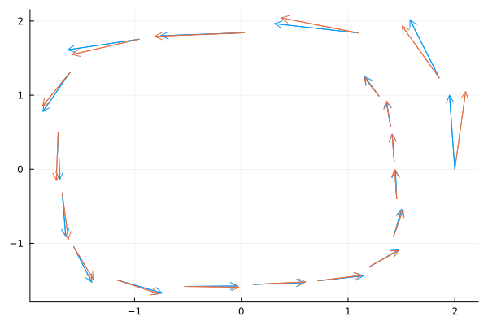
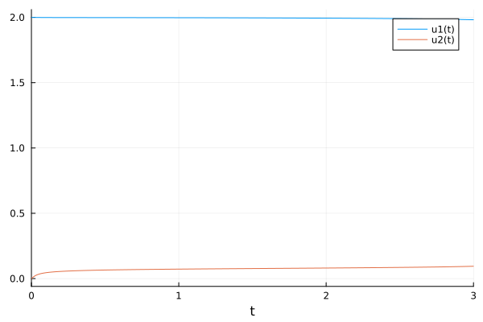

Spiral ODE

You are seeing the HTML output generated by Documenter.jl and Literate.jl from the Julia source file. The corresponding notebook can be viewed in nbviewer.
Setup
Load necessary packages
using ApproximateGPs
using Plots
using LinearAlgebra
using DifferentialEquations
using InducingPoints
using GPDiffEq
using Optimization, OptimizationOptimJLFirst we define an ODE and generate some data points from it.
u0 = [2.0; 0.0]
datasize = 10
tspan = (0.0, 3.0)
datatspan = (0.0, 1.5)
datatsteps = range(datatspan[1], datatspan[2]; length=datasize)
function trueODEfunc(u, p, t)
du = similar(u)
true_A = [-0.1 2.0; -2.0 -0.1]
return du .= ((u .^ 3)'true_A)'
end
prob_trueode = ODEProblem(trueODEfunc, u0, tspan)
sol = solve(prob_trueode, Tsit5())
ode_data = Array(sol(datatsteps))
traj = sol(datatsteps);
p = plot(sol)
scatter!(p, datatsteps, ode_data[1, :]; markersize=4)#, markerstyle = :star)
scatter!(p, datatsteps, ode_data[2, :]; m=(4, :pentagon), lab="pentagon")#, markerstyle = :star)
Gradient data
For this example we get gradient observations from our trajectory data via finite differences
First, we set all necessary variables
scaker = with_lengthscale(SqExponentialKernel(), 1.0)
moker = IndependentMOKernel(scaker)
##ToDo: make ODE data into col_vecs and add number programmatically
x = MOInput(datatsteps, 2)
σ_n = 1e-6
y = ode_data'[:]and build a finite GP from them
g = GP(moker)
gt = g(x, σ_n)
gt_post = posterior(gt, y)Now we use the following convenience functions to a loglikelihood loss function and a function to rebuild the gp with the optimal parameters. Note that we use optimize over the logarithm of the parameters, to ensure their positivity. For more details see this KernelFunctions.jl example
loss, buildgppost = gp_negloglikelihood(gt, x, y)
p0 = log.([1.0])
unfl(x) = exp.(x)
#optp = gp_train(loss ∘ unfl, p0; show_trace=true, show_every=15)unfl (generic function with 1 method)Optimizing:
adtype = Optimization.AutoZygote()
optf = Optimization.OptimizationFunction((x, p) -> (loss ∘ unfl)(x), adtype)
optprob = Optimization.OptimizationProblem(optf, p0)
optp = Optimization.solve(optprob, NelderMead(); maxiters=300)
optparams = unfl(optp)1-element Vector{Float64}:
4.850137029269082Now we can build a FiniteGP with the optimized parameters,
optpost = buildgppost(optparams)which fits pretty well
t_plot = range(datatspan...; length=100)
t_plot_mo = MOInput(t_plot, 2)
opt_pred_mean = mean(optpost, t_plot_mo)
opt_pred_mean = reshape(opt_pred_mean, :, 2)
pred_mean = mean(gt_post, t_plot_mo)
pred_mean = reshape(pred_mean, :, 2)
# pred_cov = diag(cov(optpost, t_plot_mo))
# pred_cov = reshape(pred_cov, :, 2)
# plot!(t_plot, pred_mean; ribbons = pred_cov)
plot(sol(t_plot); label=["ode" ""], color=[:skyblue :navy], linewidth=3.5)
plot!(
t_plot,
pred_mean;
label=["gp" ""],
color=[:limegreen :darkgreen],
linewidth=2.5,
linestyle=:dashdot,
)
plot!(
t_plot,
opt_pred_mean;
label=["opt. gp" ""],
color=[:tomato :firebrick],
linewidth=2.5,
linestyle=:dash,
)
GPs are closed under linear operators, which means that we can very easily obtain derivative information:
deriv_post = differentiate(optpost)
du_pred_mean = mean(deriv_post, x)
du_pred_mean = reshape(du_pred_mean, :, 2)
du = trueODEfunc.(eachcol(ode_data), 0, 0)
sf = maximum(norm.(du))
quiver(
ode_data[1, :], ode_data[2, :]; quiver=(getindex.(du, 1) / sf, getindex.(du, 2) / sf)
)
quiver!(
ode_data[1, :],
ode_data[2, :];
quiver=(du_pred_mean[:, 1] / sf, du_pred_mean[:, 2] / sf),
)
This leaves us with u and udot pairs as in the input and output:
u = ColVecs(ode_data)
udot = ColVecs(du_pred_mean')10-element KernelFunctions.ColVecs{Float64, LinearAlgebra.Adjoint{Float64, Matrix{Float64}}, SubArray{Float64, 1, LinearAlgebra.Adjoint{Float64, Matrix{Float64}}, Tuple{Base.Slice{Base.OneTo{Int64}}, Int64}, false}}:
[1.966556222355474, 13.067907128636268]
[-12.054434025925605, 5.698910098229415]
[-9.222248503633516, -5.095595171768335]
[-1.1609557808123154, -9.6306696834116]
[3.4335193284399264, -6.938377634242547]
[8.047485387715087, -0.4759197398261925]
[6.254928975733942, 1.5856426721382886]
[1.9298155930323198, 5.40208057940951]
[-1.0141615123047787, 6.271334947651146]
[-0.8774355877457074, 3.4661068724404362]Building a model
Now we build a model for the the ODE.
scaker = with_lengthscale(SqExponentialKernel(), ones(2))
moker = IndependentMOKernel(scaker)
u_mo = MOInput(u, 2)
σ_n = 1e-6
y = reduce(vcat, udot.X)and build a posterior GP
gpmodel = GP(moker)
fin_gpmodel = gpmodel(u_mo, σ_n)
post_gpmodel = posterior(fin_gpmodel, y)AbstractGPs.PosteriorGP{AbstractGPs.GP{AbstractGPs.ZeroMean{Float64}, KernelFunctions.IndependentMOKernel{KernelFunctions.TransformedKernel{KernelFunctions.SqExponentialKernel{Distances.Euclidean}, KernelFunctions.ARDTransform{Vector{Float64}}}}}, NamedTuple{(:α, :C, :x, :δ), Tuple{Vector{Float64}, LinearAlgebra.Cholesky{Float64, Matrix{Float64}}, KernelFunctions.MOInputIsotopicByOutputs{SubArray{Float64, 1, Matrix{Float64}, Tuple{Base.Slice{Base.OneTo{Int64}}, Int64}, true}, KernelFunctions.ColVecs{Float64, Matrix{Float64}, SubArray{Float64, 1, Matrix{Float64}, Tuple{Base.Slice{Base.OneTo{Int64}}, Int64}, true}}, Int64}, Vector{Float64}}}}(AbstractGPs.GP{AbstractGPs.ZeroMean{Float64}, KernelFunctions.IndependentMOKernel{KernelFunctions.TransformedKernel{KernelFunctions.SqExponentialKernel{Distances.Euclidean}, KernelFunctions.ARDTransform{Vector{Float64}}}}}(AbstractGPs.ZeroMean{Float64}(), Independent Multi-Output Kernel
Squared Exponential Kernel (metric = Distances.Euclidean(0.0))
- ARD Transform (dims: 2)), (α = [-7.441883861357397, 73.26283521765951, -20.87088580663578, 16.18270958068152, -9.843814199424052, -11.490903040509746, 35.83832833434082, -75.54513025647054, 109.19500627035308, -114.43021223611959, 32.03259270366766, -22.739590693888225, 7.206040750684662, -0.08086818941611304, -4.911649818380251, 16.220752989580607, -24.10820078438912, 38.88283835973429, -73.44537484605281, 46.95087312053302], C = LinearAlgebra.Cholesky{Float64, Matrix{Float64}}([1.000000499999875 0.12270169800141326 0.0027022961653387877 0.0008874231473715965 0.0009882975233571549 0.01165265156481762 0.14143244266890873 0.5612266680267186 0.8465243684498069 0.47629343845451166 0.0 0.0 0.0 0.0 0.0 0.0 0.0 0.0 0.0 0.0; 0.12270175935224692 0.9924441008477857 0.1213381250836824 0.007731028276590347 0.00032370754478580914 -0.0006692224996050956 -0.013996875519405361 -0.047490186514589756 0.10715197247792077 0.6306784863089335 0.0 0.0 0.0 0.0 0.0 0.0 0.0 0.0 0.0 0.0; 0.0027022975164865326 0.12075288277522109 0.9926080580957478 0.3415388285936147 0.016353874435246944 0.0035572995620148998 0.002539342482096629 0.005967748281641656 -0.00056040847911749 -0.01820347935026601 0.0 0.0 0.0 0.0 0.0 0.0 0.0 0.0 0.0 0.0; 0.0008874235910830593 0.007781501733617765 0.3399546599708229 0.9398359815653184 0.3127520582847639 0.05935043353777904 0.006459159664257307 0.0005342996571924631 0.0054641743672233355 0.011284956707029207 0.0 0.0 0.0 0.0 0.0 0.0 0.0 0.0 0.0 0.0; 0.0009882980175057931 0.0004425274274691109 0.0162749362846795 0.29952450043249684 0.9496939608689899 0.5126667080634749 0.0670282730209708 0.0108916313906103 0.0032806503938072064 -0.0018952449258547682 0.0 0.0 0.0 0.0 0.0 0.0 0.0 0.0 0.0 0.0; 0.011652657391141946 0.0007656342113342606 0.003481290922590202 0.056999795940332 0.5055079221201767 0.8564475967359699 0.49178808953338016 0.12306335493068828 0.027270481271312045 0.002617574194318725 0.0 0.0 0.0 0.0 0.0 0.0 0.0 0.0 0.0 0.0; 0.1414325133851124 0.003462884328427997 0.0012044095249183217 0.006955134902866922 0.06585323610198347 0.45760370858774474 0.8563909552543888 0.59521070689133 0.09324848508037172 -0.025653543003387104 0.0 0.0 0.0 0.0 0.0 0.0 0.0 0.0 0.0 0.0; 0.5612269486399825 0.021732109675988178 0.0016778655143843278 0.0026712693615452416 0.011147701673635373 0.11760559168448552 0.6510431833702492 0.5596386398610604 0.12397078150101111 -0.10504754755815057 0.0 0.0 0.0 0.0 0.0 0.0 0.0 0.0 0.0 0.0; 0.8465247917118853 0.21021232038828205 0.014732913022019794 0.0065236466728673965 0.005686684635727396 0.03515247095694577 0.21174844072315316 0.598276023493483 0.49705864915926834 0.43022061770059056 0.0 0.0 0.0 0.0 0.0 0.0 0.0 0.0 0.0 0.0; 0.4762936766011714 0.6843551569142122 0.05974351070319892 0.009687280383372318 0.0021066683717152566 0.0070032152426523055 0.03775327725047467 0.16349849133866065 0.6693393737064282 0.42206418401072304 0.0 0.0 0.0 0.0 0.0 0.0 0.0 0.0 0.0 0.0; 0.0 0.0 0.0 0.0 0.0 0.0 0.0 0.0 0.0 0.0 1.000000499999875 0.12270169800141326 0.0027022961653387877 0.0008874231473715965 0.0009882975233571549 0.01165265156481762 0.14143244266890873 0.5612266680267186 0.8465243684498069 0.47629343845451166; 0.0 0.0 0.0 0.0 0.0 0.0 0.0 0.0 0.0 0.0 0.12270175935224692 0.9924441008477857 0.1213381250836824 0.007731028276590347 0.0003237075447858091 -0.0006692224996050955 -0.013996875519405363 -0.047490186514589756 0.10715197247792077 0.6306784863089335; 0.0 0.0 0.0 0.0 0.0 0.0 0.0 0.0 0.0 0.0 0.0027022975164865326 0.12075288277522109 0.9926080580957478 0.3415388285936147 0.016353874435246944 0.0035572995620148998 0.00253934248209663 0.005967748281641656 -0.00056040847911749 -0.01820347935026601; 0.0 0.0 0.0 0.0 0.0 0.0 0.0 0.0 0.0 0.0 0.0008874235910830593 0.007781501733617765 0.3399546599708229 0.9398359815653184 0.3127520582847639 0.05935043353777904 0.006459159664257307 0.0005342996571924631 0.005464174367223336 0.011284956707029207; 0.0 0.0 0.0 0.0 0.0 0.0 0.0 0.0 0.0 0.0 0.0009882980175057931 0.0004425274274691109 0.0162749362846795 0.29952450043249684 0.9496939608689899 0.5126667080634749 0.06702827302097077 0.0108916313906103 0.0032806503938072064 -0.0018952449258547686; 0.0 0.0 0.0 0.0 0.0 0.0 0.0 0.0 0.0 0.0 0.011652657391141946 0.0007656342113342606 0.003481290922590202 0.056999795940332 0.5055079221201767 0.8564475967359699 0.49178808953338016 0.12306335493068826 0.027270481271312045 0.0026175741943187253; 0.0 0.0 0.0 0.0 0.0 0.0 0.0 0.0 0.0 0.0 0.1414325133851124 0.003462884328427997 0.0012044095249183217 0.006955134902866922 0.06585323610198347 0.45760370858774474 0.8563909552543888 0.59521070689133 0.09324848508037172 -0.0256535430033871; 0.0 0.0 0.0 0.0 0.0 0.0 0.0 0.0 0.0 0.0 0.5612269486399825 0.021732109675988178 0.0016778655143843278 0.0026712693615452416 0.011147701673635373 0.11760559168448552 0.6510431833702492 0.5596386398610604 0.12397078150101111 -0.10504754755815052; 0.0 0.0 0.0 0.0 0.0 0.0 0.0 0.0 0.0 0.0 0.8465247917118853 0.21021232038828205 0.014732913022019794 0.0065236466728673965 0.005686684635727396 0.03515247095694577 0.21174844072315316 0.598276023493483 0.49705864915926823 0.43022061770059067; 0.0 0.0 0.0 0.0 0.0 0.0 0.0 0.0 0.0 0.0 0.4762936766011714 0.6843551569142122 0.05974351070319892 0.009687280383372318 0.0021066683717152566 0.0070032152426523055 0.03775327725047467 0.16349849133866065 0.6693393737064282 0.42206418401072293], 'U', 0), x = Tuple{SubArray{Float64, 1, Matrix{Float64}, Tuple{Base.Slice{Base.OneTo{Int64}}, Int64}, true}, Int64}[([2.0, 0.0], 1), ([1.0968335224363548, 1.8385558167331164], 1), ([-0.9576760631528309, 1.7548385045374404], 1), ([-1.715872629998389, 0.496655682922846], 1), ([-1.5690755776160907, -1.0491673166662385], 1), ([-0.5298628588298211, -1.5824777916258712], 1), ([0.7182148654337268, -1.5062842011252175], 1), ([1.4264889494226716, -0.9090351474695393], 1), ([1.4322861125730242, 0.1045587063270885], 1), ([1.2893454342143849, 0.9891467953863277], 1), ([2.0, 0.0], 2), ([1.0968335224363548, 1.8385558167331164], 2), ([-0.9576760631528309, 1.7548385045374404], 2), ([-1.715872629998389, 0.496655682922846], 2), ([-1.5690755776160907, -1.0491673166662385], 2), ([-0.5298628588298211, -1.5824777916258712], 2), ([0.7182148654337268, -1.5062842011252175], 2), ([1.4264889494226716, -0.9090351474695393], 2), ([1.4322861125730242, 0.1045587063270885], 2), ([1.2893454342143849, 0.9891467953863277], 2)], δ = [1.966556222355474, 13.067907128636268, -12.054434025925605, 5.698910098229415, -9.222248503633516, -5.095595171768335, -1.1609557808123154, -9.6306696834116, 3.4335193284399264, -6.938377634242547, 8.047485387715087, -0.4759197398261925, 6.254928975733942, 1.5856426721382886, 1.9298155930323198, 5.40208057940951, -1.0141615123047787, 6.271334947651146, -0.8774355877457074, 3.4661068724404362]))and optimize
loss, buildgppost = gp_negloglikelihood(fin_gpmodel, u_mo, y)
p0 = log.(ones(2))
unfl(x) = exp.(x)
optf = Optimization.OptimizationFunction((x, p) -> (loss ∘ unfl)(x), adtype)
optprob = Optimization.OptimizationProblem(optf, p0)
optp = Optimization.solve(optprob, NelderMead(); maxiters=300)
optparams = unfl(optp)2-element Vector{Float64}:
2.1450944708189903
38.2853899274332We build a posterior GP with the optimized parameters,
optpost = buildgppost(optparams)and incorporate into a GP ode model. Unfortunately, this does not currently match the previous implementation.
gpode = GPODE(optpost, tspan)
gpsol = gpode(u0)
plot(gpsol)
This page was generated using Literate.jl.